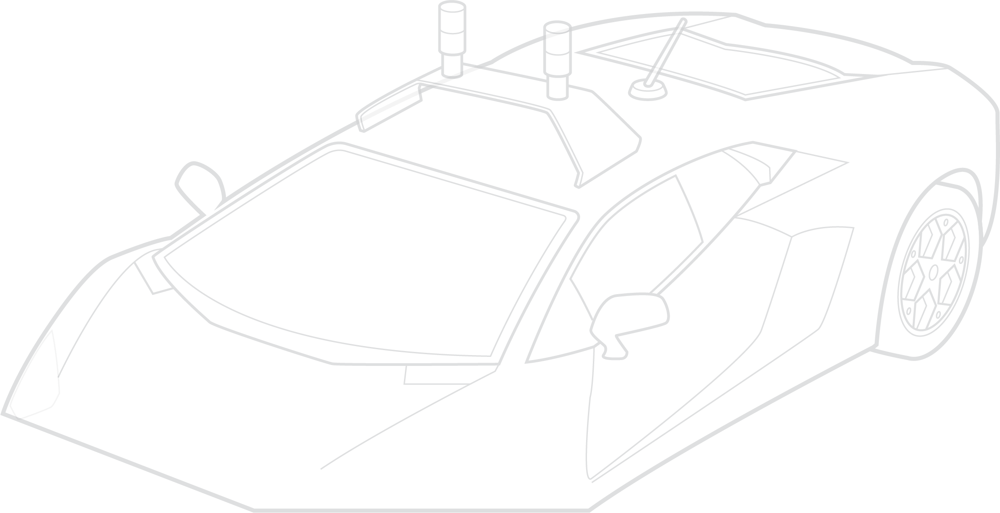
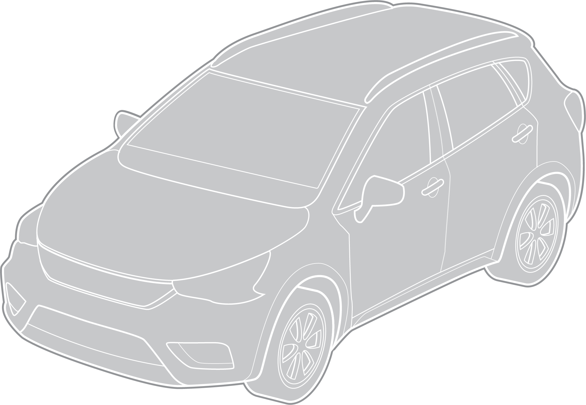

Sources

Technologies of a fully autonomous car:
Levels of automation:
Illustration by Vic Kulihin
“Self-Driving Autonomous cars,” Automotive technologies; “When Driverless Cars Call For Backup” Automotive News, February 18, 2017; The Wired Guide To Self-Driving Cars, Wired, February 2, 2018.
The 6 Levels of Autonomous Driving: Autoweek Explains, Autoweek, September 25, 2017; Self-driving Vehicles: What Are The Six Levels Of Autonomy?, New Atlas, June 7, 2017; What Are Autonomous Car Levels? Levels 1 To 5 Of Driverless Vehicle Tech Explained, Car Magazine, March 23, 2018.

Backup systems
Backup systems for the brakes, steering, sensors and computer chips allow self-driving vehicles to safely pull over in case of equipment failure.
Central computer
The central computer analyzes information from the GPS, sensors and cameras and understands the formal and informal rules of the road. With this information, it decides on actions such as steering, accelerating and braking.
GPS (global
positioning system)
The GPS uses satellites to triangulate the vehicle’s position and combines its readings with those from tachometers, altimeters and gyroscopes for increased accuracy.
Ultrasonic sensors
Ultrasonic sensors assist with tasks such as parking, reversing and maneuvering through traffic by collecting close-range data and determining the velocity and proximity of nearby objects.
Infrared sensors
Infrared sensors help detect lane markings, pedestrians, bikes and other obstacles that might be hard to see in low light or certain weather conditions such as rain or fog.
Radar sensors
Radar sensors use radio waves to determine the distance between obstacles and detect possible collisions. They process this information and can send signals to the car’s central computer to take action such as to brake, accelerate or swerve.
Lidar (light imaging, detection and ranging)
Lidar (or LIDAR, LiDAR, or LADAR) is a surveying method used to measure the distance to a target. It sends out pulses of infrared light and measures how long the pulses take to reflect or travel back after hitting a target. By sending out millions of these pulses per second and compiling the results, lidar creates a 3-D map of its surroundings, essentially in real time. By generating hard data that is fed into a car’s central computer, lidar helps autonomous vehicles predict the behavior of surrounding objects and therefore aids navigation.
Cameras
Cameras take 2-D images and run them through the central computer to build a composite picture of the vehicle’s surroundings. These cameras read traffic lights; recognize lane markings and road signs; detect peripheral movement such as from pedestrians and other objects; and, like the human eye, can gauge depths.



Click here for sensor ranges
Click here for camera range
Click here for LIDAR range
Select red areas on car for more information
—Mike Stankard, Automotive Practice Leader, Aon
“The data within the black-box technology of these vehicles will bring more certainty in determining each vehicle’s contribution to a crash event, which can considerably accelerate claim resolution and reduce unnecessary legal costs.”
Technologies for fully autonomous car diagram
Full automation
5
High automation
4
Conditional automation
3
Partial automation
2
Driver assistance
1
No automation
0
Vehicle fully automated; no human driver needed
Full automation
Vehicle can fully drive itself and stop and park; humans can drive if desired, and human assistance might be needed in certain situations
High automation
Vehicle can fully control some modes such as steering, speed, and road monitoring; human driver only needed when system requires assistance
Conditional automation
In certain conditions, vehicle can control multiple tasks simultaneously such as speed and steering; otherwise human fully responsible
Partial automation
Vehicle assists with certain tasks one at a time, such as steering, speed, or park assist; otherwise humans fully responsible
Driver assistance
Humans fully responsible for vehicle
No automation
The future
Where we are today
Full automation
5
High automation
4
Conditional automation
3
Partial automation
2
Driver assistance
1
No automation
0
Click levels for more information
—Jillian Slyfield, Digital Economy Practice Leader, Risk Consulting and Insurance Services, Aon
“We’re not looking at an overnight change to driverless cars. Human drivers will likely
intermix with autonomous vehicles on the road, and there will be various stages toward full autonomy.”
Levels of automation
An overview of autonomous cars